Introduction to NGFW & NGIPS¶
Cisco Next Generation Security - protection throughout the attack continuum.
Advanced Malware Protection (AMP) - discover threats and enforce and harden policies.
Next-Generation IPS (NGIPs), Email Security, Web Security Appliance (WSA) with AMP - detect, block, and defend against attacks that have taken place.
FirePOWER (uppercase) - Cisco ASA FirePOWER module.
Firepower (lowercase) - FTD unified image and newer software.
Cisco Firewall History and Legacy¶
Cisco started with Centri Firewall.
Cisco acquired PIX (Private Internet Exchange) Firewall.
Cisco purchased WheelGroup, Cisco’s legacy IDS and IPS system.
Cisco released Adaptive Security Appliance (ASA), which was popular.
There is a virtual appliance equivalent, ASAv.
See https://www.cisco.com/c/en/us/products/security/firewalls/index.html for ASA releases.
Cisco ASA¶
Simple packet filtering (ACLs) and stateful inspection.
Application inspection/awareness.
NATting.
DHCP server or client, or both.
RIP, EIGRP, OSPF, and static routing.
Traditional layer 3 firewall.
Optional transparent layer 2 firewall.
Headend or remote-end for VPN tunnels for both remote access VPN & site-to-site VPN.
IPsec & SSL-based remote-access VPNs with clientless SSL and full AnyConnect SSL VPN.
Botnet traffic-filtering.
Cisco ASA with FirePOWER Module¶
Integration of Sourcefire technology.
Module can be managed via Firepower Management Center (FMC), formerly known as the FireSIGHT Management Centre.
FMC and ASA FirePOWER module require additional licensing.
All ASAs (except 5506-X, 5508-X, 5516-X) can be managed by Adaptive Security Device Manager (ASDM), where license can be installed.
All ASAs with FirePOWER managed by FMC can have their license installed on FMC and used by module.
Cisco Firepower Threat Defence (FTD)¶
https://cisco.com/go/security.
FTD is unified software that includes ASA, legacy FirePOWER, and new features. FTD is deployed via Firepower 1000, 2100, 4100, 9000 series appliances that provide NGFW services.
Cisco Firepower 1000 Series¶
Small business and home offices.
Cisco Firepower 1010: A desktop firewall with eight 1 Gigabit Ethernet ports, and scales up to 650 Mbps of NGFW throughput.
Cisco Firepower 1120: A rack-mount firewall with eight 1 Gigabit Ethernet ports and four SFP ports. The Firepower 1120 scales to up to 1.5 Gbps of NGFW throughput.
Cisco Firepower 1140: A rack-mount firewall with eight 1 Gigabit Ethernet ports and four SFP ports. The Firepower 1140 scales to up to 2.2 Gbps of NGFW throughput.
Cisco Firepower 2100 Series¶
Internet edge and data centre.
Cisco Firepower 2110: A rack-mount 1 RU firewall with twelve 1 Gigabit Ethernet ports and four SFP ports. The Firepower 2110 scales up to 2 Gbps of NGFW throughput.
Cisco Firepower 2120: A rack-mount 1 RU firewall with twelve 1 Gigabit Ethernet ports and four SFP ports. The Firepower 2120 scales up to 3 Gbps of NGFW throughput.
Cisco Firepower 2130: A rack-mount 1 RU firewall with up-to twenty-four 1 Gigabit Ethernet ports or twelve 1 Gigabit Ethernet and twelve 10 Gigabit Ethernet ports. The Firepower 2130 scales up to 5 Gbps of NGFW throughput.
Cisco Firepower 2140: A rack-mount 1 RU firewall with up-to twenty-four 1 Gigabit Ethernet ports or twelve 1 Gigabit Ethernet and twelve 10 Gigabit Ethernet ports. The Firepower 2140 scales up to 8.5 Gbps of NGFW throughput.
Cisco Firepower 4100 Series¶
Cisco Firepower 4110: A rack-mount 1 RU firewall with 1, 10, or 40 Gbps interfaces scaling up to 35 Gbps of firewall throughput and 11 Gbps of threat inspection throughput.
Cisco Firepower 4120: A rack-mount 1 RU firewall with 1, 10, or 40 Gbps interfaces scaling up to 60 Gbps of firewall throughput and 19 Gbps of threat inspection throughput.
Cisco Firepower 4140: A rack-mount 1 RU firewall with 1, 10, or 40 Gbps interfaces scaling up to 70 Gbps of firewall throughput and 27 Gbps of threat inspection throughput.
Cisco Firepower 4150: A rack-mount 1 RU firewall with 1, 10, or 40 Gbps interfaces scaling up to 75 Gbps of firewall throughput and 39 Gbps of threat inspection throughput.
Cisco Firepower 4115: A rack-mount 1 RU firewall with 1, 10, or 40 Gbps interfaces scaling up to 80 Gbps of firewall throughput and 26 Gbps of threat inspection throughput.
Cisco Firepower 4125: A rack-mount 1 RU firewall with 1, 10, or 40 Gbps interfaces scaling up to 80 Gbps of firewall throughput and 35 Gbps of threat inspection throughput.
Cisco Firepower 4145: A rack-mount 1 RU firewall with 1, 10, or 40 Gbps interfaces scaling up to 80 Gbps of firewall throughput and 45 Gbps of threat inspection throughput.
Cisco Firepower 9300 Series¶
Very large enterprises or service providers. ASA, FTD, Radware DefencePro DDoS mitigation software (from 4150 up - realtime analysis to protect against DDoS).
Cisco FTD for Cisco Integrated Services Routers (ISRs)¶
FTD can run on Cisco Unified Computing System (UCS) E-Series blades installed on ISR routers.
FMC & FTD are deployed as VMs.
Two internal interfaces connect a router to UCS E-Series blade.
On ISR G2, Slot0 is a Peripheral Component Interconnect Express (PCIe) internal interface.
On UCS E-Series Slot1 is a switched interface connected to backplane Multi Gigabit Fabric (MGF).
In ISR 400 series routers, both internal interfaces are connected to MGF.
Hypervisor is installed on UCS E-Series blade, where FTD runs. FTD for ISR is supported on:
Cisco ISR G2 Series: 2911, 2921, 2951, 3925, 3945, 3925E, and 3945E
Cisco ISR 4000 Series: 4331, 4351, 4451, 4321, and 4431
Introduction to Cisco NGIPS¶
Legacy IPSs depend on matching signature patterns to identify malicious activity. Characteristics of legacy IPSs:
They are sometimes deployed behind a firewall when providing IPS functionality (inline). Often, an IPS is also placed in the network without a firewall in front of it.
They often look for attempts to exploit a vulnerability and not for the existence of a vulnerability.
Legacy IPSs often generate large amounts of event data that are difficult to correlate.
They focus on individual indicators/events without focusing on contextual information to take action.
Legacy IPSs require manual tuning for better efficacy.
Shortcomings of legacy IPSs:
They often need to be operated in conjunction with other products or tools (firewalls, analytics, and correlation tools).
They are sometimes not very effective and may be ignored.
Their operation costs and the operating resources they need are high.
They can leave infrastructures imperfectly covered against attackers.
NGIPS capabilities:
Application awareness and control: NGIPSs provide visibility into Layer 7 applications and can protect against Layer 7 threats.
Content awareness of the information traversing the infrastructure: For example, knowledge about files transferred between two hosts can be used to identify viruses transferred and the trajectory of a virus infection in a system.
Contextual awareness: Helps better understand alerts and automatically deduce comprehensive information about the events taking place, which makes the NGIPS less complex and means it requires less tuning.
Host and user awareness: The infrastructure offers more conclusive information about the events taking place.
Automated tuning and recommendations: This allows an administrator to follow recommendations and tune signatures specifically to his environment.
Impact and vulnerability assessment of the events taking place: The impact of a security event identified by the system can be evaluated based on the information available for the environment. For example, a Windows system that is identified to secure a vulnerability cannot be severely impacted by an attempt to exploit the vulnerability against it.
Cisco Firepower NGIPS engine is based on Snort, originally created by SourceFire, which is an open source IPS tool, used all over the industry. Cisco Snort IPS rules are developed by the Cisco Talos team. 3rd Party rules can also be used. Capabilities of Cisco NGIPS:
Threat containment and remediation: Cisco Firepower NGIPS provides protection against known and new threats. Its features include file analysis, packet- and flow-based inspection, and vulnerability assessment.
Application visibility: Cisco Firepower NGIPS offers deep inspection and control of application-specific information for better efficacy.
Identity management: NGIPS policies can be enforced by using contextual user information.
Security automation: Cisco Firepower NGIPS includes automated event impact assessment and policy tuning.
Logging and traceability management: This can be used in retrospective analysis.
High availability and stacking: Cisco Firepower NGIPS provides redundancy and performance by leveraging multiple devices.
Network behavioural analysis: Key behavioural indicators and threat scores help analysts prioritise and recover from attacks.
Access control and segmentation: Access policies can be applied to separate traffic profiles in the network.
Real-time contextual awareness: NGIPS discovers and provides information about applications, users, devices, operating systems, vulnerabilities, services, processes, files, and threat data related to IT environments.
Introduction to Cisco Firepower Management Centre (FMC)¶
FTD devices, Firepower NGIPS devices, and ASA FirePOWER modules can be managed by FMC.
When adding a device, you must provide an IP address of managed device with registration key for authentication.
Use of registration key and NAT ID instead of IP address in case device is behind NAT to authenticate and authorise initial registration.
NAT ID (must be unique per device) is used for NAT environments, but can be used to simplify adding many devices to FMC.
Detailed analytics and statistics of what’s happening in network.
Summary dashboard, showing statistics and data about top attackers, targets, intrusion events, events by application protocols, etc., all customisable:
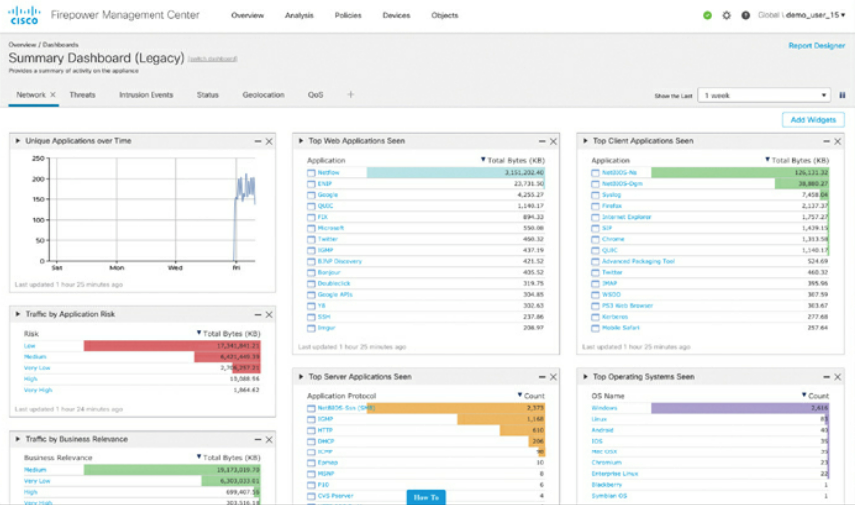Connection Summary Dashboard, showing information about allowed and denied connections by applications over time:
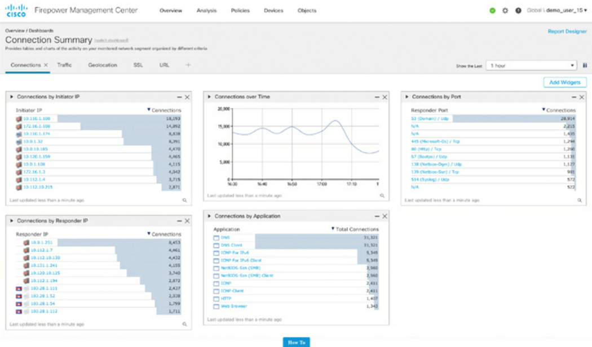Content Explorer, showing statistics of traffic and intrusions over time, indicators of compromise, etc.:
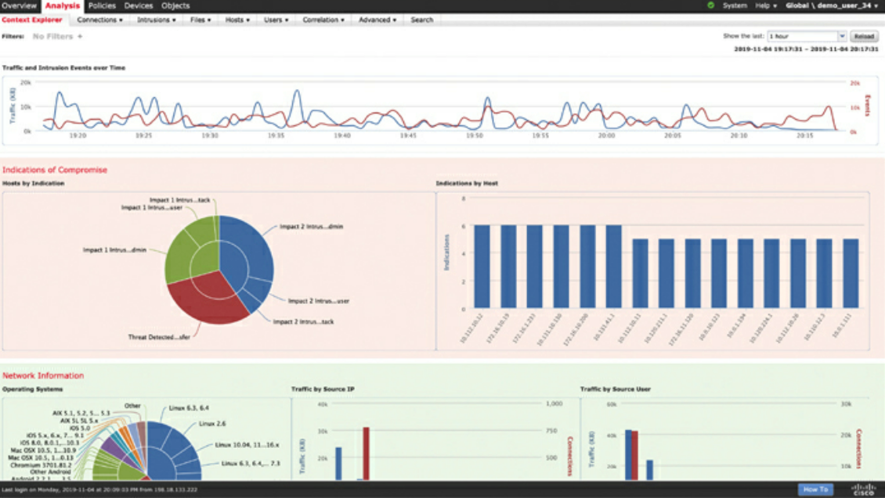Network File Trajectory maps show how hosts transfer files, at risk hosts, trends, etc. Transfer of data, disposition of file, blocked or quarantined, etc.:
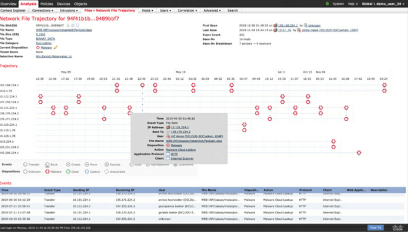Introduction to Cisco Firepower Device Manager (FDM)¶
FDM configures small FTD deployments. Accessed via the firewall’s IP address / hostname in browser.
FDM setup wizard:
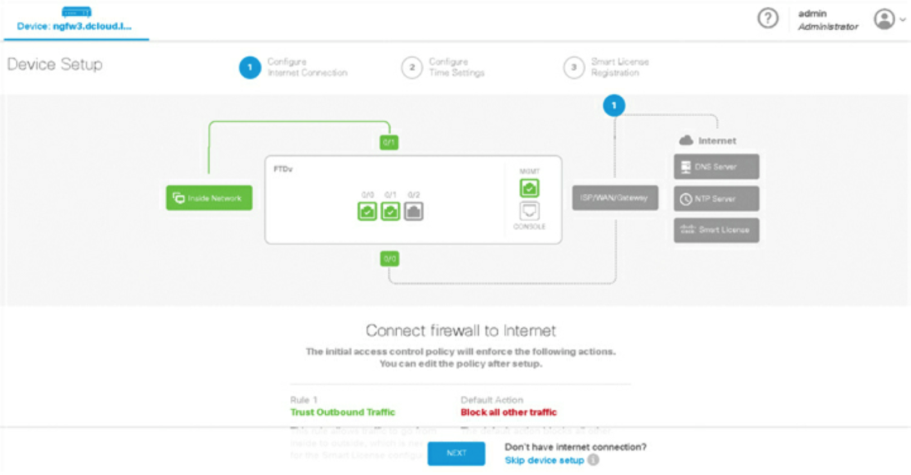FDM main dashboard, showing configured interfaces, routes, updates, geolocation, rules, Vulnerability Database [VDB], Security Intelligence feeds, etc., smart licensing, backup and restore, troubleshooting, etc.:
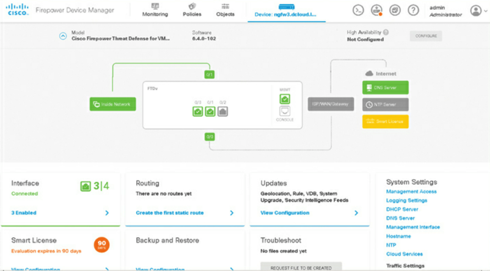NAT rule in FDM:
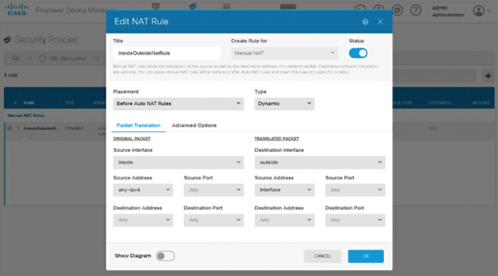Access control rule in FDM:
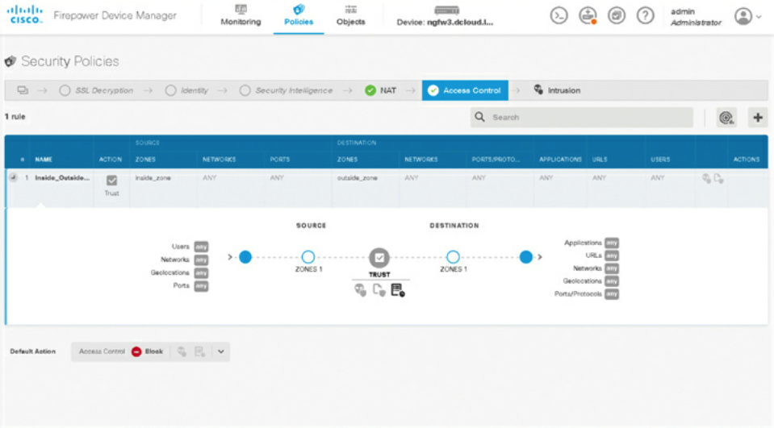Traditional ACL (source and destination):
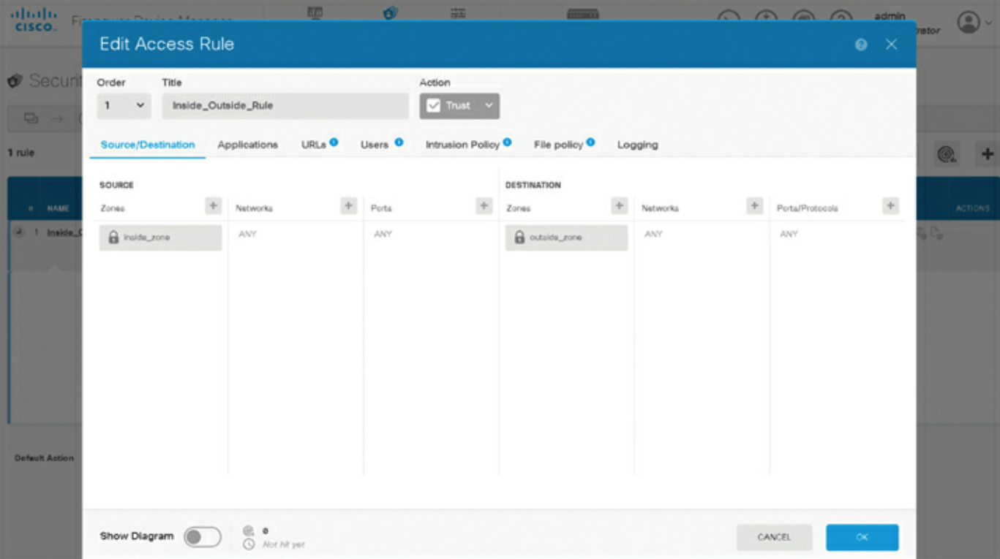Application based ACL:
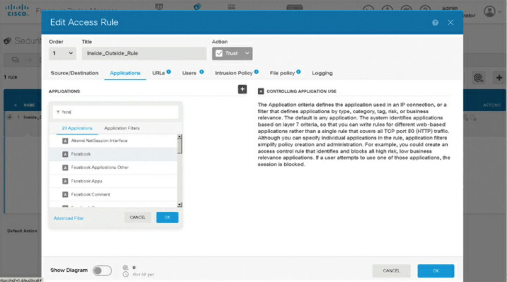Cisco Defence Orchestrator¶
CDO allows you to manage firewalls from the cloud.
You can write policies and enforce consistently across multiple ASA and FTD devices.
Compare, filter, edit, and create new policies.
Analyse access control policies and objects to identify errors and inconsistencies.
Create standard policy templates for consistency and effectiveness across enterprise environment.
CDO main dashboard:
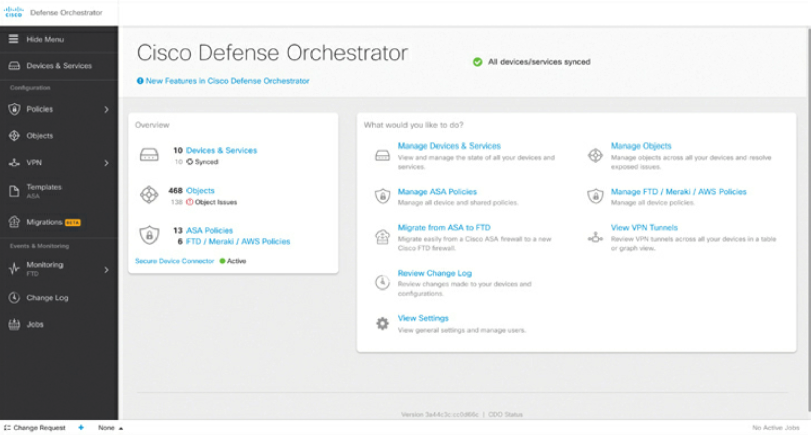ASA policies configured in CDO:
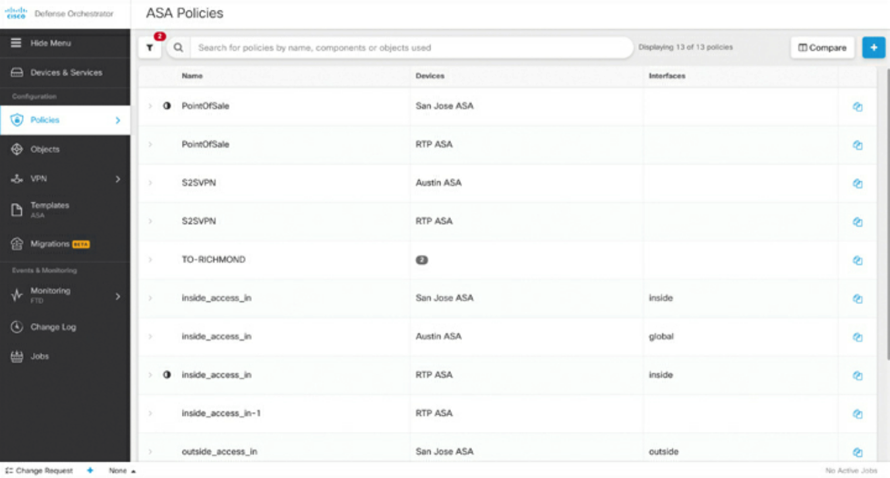FTD, Meraki and virtual AWS firewalls being managed by CDO:
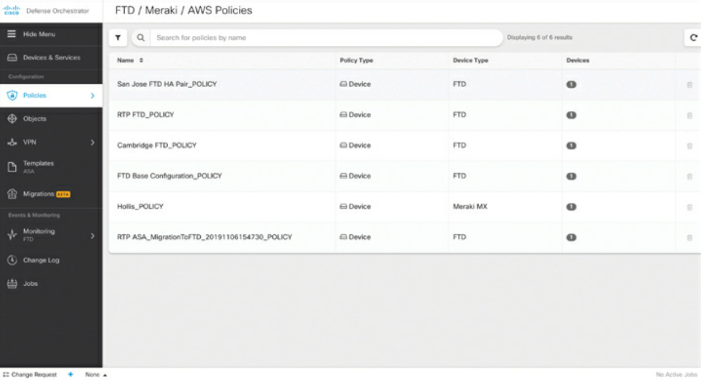More FTD policies in CDO:
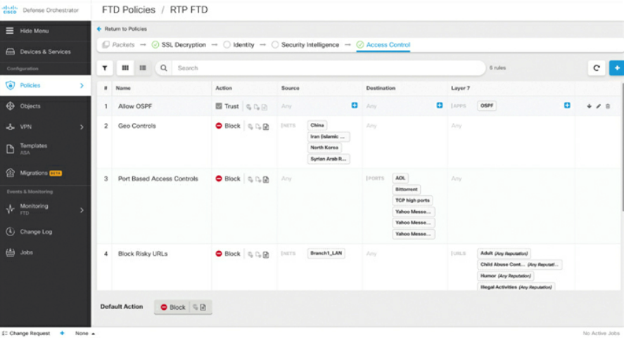